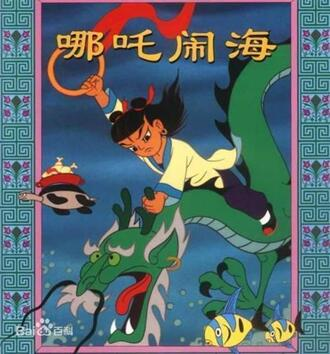
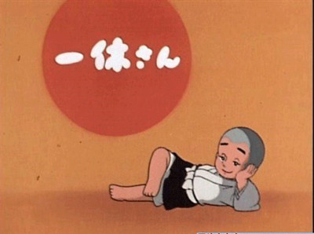
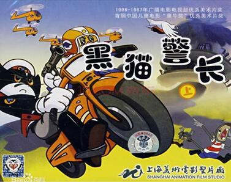
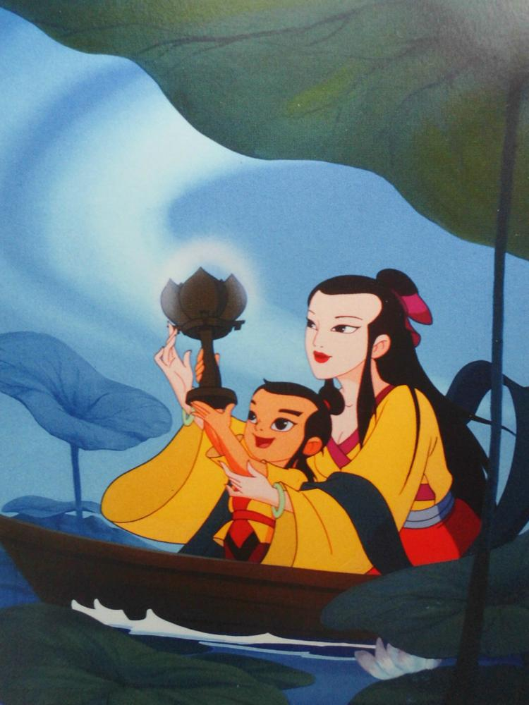

文革结束之后，在1979年，上海美术电影制片厂做出了一部《哪吒闹海》，在动画中对于小哪吒的角色塑造也十分丰满。但是制作水平和设计还是在效仿《大闹天空》。不过从此中国动画开始慢慢走向一个复兴的时期。

像以前一样，很多新动画又开始慢慢多了起来，但是文革带来的影响是在巨大，导致很久一段时间里中国动画的制作水平一直处于世界下游，上海美术电影制片厂就是整个中国动画的代表。
当然以上都只是国漫的萌芽，其实新时代动漫已经开始萌芽了。尽管文革后的国漫在制作上面非常有特色，水平也处于前列，但是，并没有受到有关部门的关注以及商业化。加上改革开放以后许多国外的动画被引进中国电视上面播放，比如，《变形金刚》,《蓝精灵》，《一休》......

中国动画市场在这样的冲击下，中国也能够尽力拿出一些能够与其较量的作品， 如，上海电影美术制片厂制作的《葫芦兄弟》《黑猫警长》等优秀的动画，这些动画人设丰满，剧情细腻至今仍是我国80后或者90后的童年记忆。

但是，中国动画当时并没有太多资金的注入，动画制作周期推迟、人才流失、导致技术的落后，渐渐导致中国动画难以去和外国商业化动画较量。渐渐的中国动画开始失去自己核心的文化，所有的动画都被国人普遍认为是低龄幼稚的产物，再次走入低谷。
当时的中国动画要钱要技术，并且二次元还没有进行扩展，所以为了这些东西，许多动画市场开始向子供向下手。1999年，一部《宝莲灯》横空出世，央视制作动画片《西游记》也联手上映，又激励了许多动画爱好者的热情，努力，加上动漫迷以及国家的支持与重视，中国动漫市场的格局开始发生了改变。
